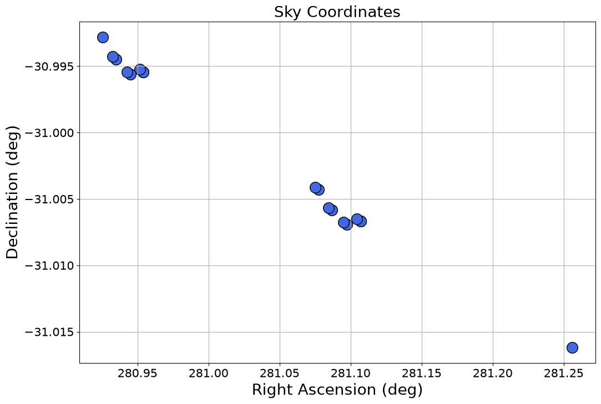

Wildcard Handling with Astroquery.mast#
Learning Goals#
By the end of this tutorial, you will:
Use the wildcards available for
astroquery.mast.Observationscriteria queriesBroaden and refine
astroquery.mast.Observationscriteria queriesFully utilize the
instrument_namecriteria, especially for JWST queriesQuery for moving targets using target ephemeris and time criteria such as
t_minandt_max
Introduction#
This Notebook demonstrates the use of wildcards in astroquery.mast.Observations criteria queries. The use of wildcards is encouraged for certain criteria types (namely, string object types) to ensure your query returns all results.
We will demonstrate 3 use-cases for wildcards when doing criteria queries and emphasize certain criteria where wildcard usage is highly encouraged, particularly for JWST queries. We will also use the last example to demonstrate the use of value ranges when working with float object criteria types.
The workflow for this notebook consists of:
Imports#
import astropy.units as u
import matplotlib.pyplot as plt
from astropy.coordinates import SkyCoord
from astropy.table import Table, unique, vstack
from astropy.time import Time
from astroquery.mast import Observations
Wildcards with astroquery.mast.Observations#
The use of wildcards when making astroquery.mast.Observations queries can help ensure you retrieve all observations without leaving anything out. The available wildcards are % and *: % replaces a single character, while * replaces more than one character preceding, following, or in between the existing characters, depending on its placement. See the Observation Criteria Queries section in the astroquery.mast documentation for more information on the wildcards.
Wildcards are only available for certain criteria. string type objects accept wildcards, but float, integer, or any other objects do not accept wildcards.
Users may call the get_metadata method to see the list of query criteria and their data types. The criteria listed as string objects under the Data Type column are criteria that can be called with wildcards:
Observations.get_metadata("observations")
| Column Name | Column Label | Data Type | Units | Description | Examples/Valid Values |
|---|---|---|---|---|---|
| str21 | str25 | str7 | str10 | str72 | str116 |
| intentType | Observation Type | string | Whether observation is for science or calibration. | Valid values: science, calibration | |
| obs_collection | Mission | string | Collection | E.g. SWIFT, PS1, HST, IUE | |
| provenance_name | Provenance Name | string | Provenance name, or source of data | E.g. TASOC, CALSTIS, PS1 | |
| instrument_name | Instrument | string | Instrument Name | E.g. WFPC2/WFC, UVOT, STIS/CCD | |
| project | Project | string | Processing project | E.g. HST, HLA, EUVE, hlsp_legus | |
| filters | Filters | string | Instrument filters | F469N, NUV, FUV, LOW DISP, MIRROR | |
| wavelength_region | Waveband | string | Energy Band | EUV, XRAY, OPTICAL | |
| target_name | Target Name | string | Target Name | Ex. COMET-67P-CHURYUMOV-GER-UPDATE | |
| target_classification | Target Classification | string | Type of target | Ex. COMET;COMET BEING ORBITED BY THE ROSETTA SPACECRAFT;SOLAR SYSTEM | |
| ... | ... | ... | ... | ... | ... |
| obsid | Product Group ID | integer | Database identifier for obs_id | Long integer, e.g. 2007590987 | |
| dataRights | Data Rights | string | Data Rights | valid values: public,exclusive_access,restricted | |
| mtFlag | Moving Target | boolean | Moving Target Flag | If True, observation contains a moving target, if False or absent observation may or may not contain a moving target | |
| srcDen | Number of Catalog Objects | float | Number of cataloged objects found in observation | ||
| dataURL | Data URL | string | Data URL | ||
| proposal_type | Proposal Type | string | Type of telescope proposal | Eg. 3PI, GO, GO/DD, HLA, GII, AIS | |
| sequence_number | Sequence Number | integer | Sequence number, e.g. Kepler quarter or TESS sector | ||
| wave_min | Min. Wavelength | float | nm | Min.wavelength | |
| wave_max | Max. Wavelength | float | nm | Max.wavelength | |
| wave_region | Waveband | string | Energy Band UCD |
Case 1: Wildcard Search with instrument_name#
For our first example we will search for all NIRISS observations taken by a certain proposal/program PI. Our two query criteria are proposal_pi and instrument_name, which are both string object criteria. As such, both can be wildcarded for ease of use.
In fact, it is sometimes necessary to use wildcards when searching on instrument_name. Both HST and JWST use instrument configurations in this field to allow for more precise advanced searches (e.g. NIRISS/IMAGE and STIS/FUV-MAMA). When performing a “generic” search, you must include a wildcard or these more detailed results will be excluded.
We will demonstrate this by looking at the results for the query below:
observations = Observations.query_criteria(proposal_pi="Espinoza, Nestor",
instrument_name="NIRISS*")
observations
| intentType | obs_collection | provenance_name | instrument_name | project | filters | wave_region | target_name | target_classification | obs_id | s_ra | s_dec | dataproduct_type | proposal_pi | calib_level | t_min | t_max | t_exptime | wavelength_region | em_min | em_max | obs_title | t_obs_release | proposal_id | proposal_type | sequence_number | s_region | jpegURL | dataURL | dataRights | mtFlag | srcDen | obsid | objID | wave_min | wave_max |
|---|---|---|---|---|---|---|---|---|---|---|---|---|---|---|---|---|---|---|---|---|---|---|---|---|---|---|---|---|---|---|---|---|---|---|---|
| str7 | str4 | str7 | str12 | str4 | str13 | str8 | str14 | str54 | str50 | float64 | float64 | str10 | str16 | int64 | float64 | float64 | float64 | str8 | float64 | float64 | str70 | float64 | str4 | str3 | int64 | str136 | str80 | str81 | str6 | bool | float64 | str9 | str10 | float64 | float64 |
| science | JWST | CALJWST | NIRISS/IMAGE | JWST | CLEAR;GR700XD | INFRARED | ECLIPTIC-RA80 | Calibration; External flat field | jw01541005001_0210h_00001_nis | 124.10089166666668 | 19.23126111111111 | image | Espinoza, Nestor | 2 | 59688.66172462963 | 59688.665328414354 | 300.63 | INFRARED | 600.0 | 2800.0 | NIRISS Sensitivity and Stability for Transiting Exoplanet Observations | 59774.8541666 | 1541 | COM | -- | POLYGON 124.079361272 19.219997306 124.088204918 19.256195264 124.126749247 19.247627141 124.117926871 19.211434025 | mast:JWST/product/jw01541005001_0210h_00001_nis_trapsfilled.jpg | mast:JWST/product/jw01541005001_0210h_00001_nis_rateints.fits | PUBLIC | False | nan | 79661376 | 1162083517 | 600.0 | 2800.0 |
| science | JWST | CALJWST | NIRISS/IMAGE | JWST | CLEAR;GR700XD | INFRARED | ECLIPTIC-RA80 | Calibration; External flat field | jw01541005001_0210v_00001_nis | 124.10089166666668 | 19.23126111111111 | image | Espinoza, Nestor | 2 | 59688.69811052083 | 59688.70171430556 | 300.63 | INFRARED | 600.0 | 2800.0 | NIRISS Sensitivity and Stability for Transiting Exoplanet Observations | 59774.8541666 | 1541 | COM | -- | POLYGON 124.070680154 19.221940542 124.079522008 19.258138913 124.118067242 19.249572589 124.109246657 19.213379062 | mast:JWST/product/jw01541005001_0210v_00001_nis_trapsfilled.jpg | mast:JWST/product/jw01541005001_0210v_00001_nis_rateints.fits | PUBLIC | False | nan | 79661402 | 1162083558 | 600.0 | 2800.0 |
| science | JWST | CALJWST | NIRISS/IMAGE | JWST | CLEAR;GR700XD | INFRARED | ECLIPTIC-RA80 | Calibration; External flat field | jw01541005001_0210b_00001_nis | 124.10089166666668 | 19.23126111111111 | image | Espinoza, Nestor | 2 | 59688.64615130787 | 59688.64975509259 | 300.63 | INFRARED | 600.0 | 2800.0 | NIRISS Sensitivity and Stability for Transiting Exoplanet Observations | 59774.8541666 | 1541 | COM | -- | POLYGON 124.080801154 19.213559815 124.089644763 19.249757705 124.128187507 19.241189289 124.119365169 19.20499624 | mast:JWST/product/jw01541005001_0210b_00001_nis_trapsfilled.jpg | mast:JWST/product/jw01541005001_0210b_00001_nis_rateints.fits | PUBLIC | False | nan | 79661433 | 1162083606 | 600.0 | 2800.0 |
| science | JWST | CALJWST | NIRISS/IMAGE | JWST | CLEAR;GR700XD | INFRARED | ECLIPTIC-RA80 | Calibration; External flat field | jw01541005001_0210p_00001_nis | 124.10089166666668 | 19.23126111111111 | image | Espinoza, Nestor | 2 | 59688.68251201389 | 59688.68611579861 | 300.63 | INFRARED | 600.0 | 2800.0 | NIRISS Sensitivity and Stability for Transiting Exoplanet Observations | 59774.8541666 | 1541 | COM | -- | POLYGON 124.072120417 19.215503156 124.080962242 19.251701457 124.119505889 19.243134834 124.110685335 19.206941375 | mast:JWST/product/jw01541005001_0210p_00001_nis_trapsfilled.jpg | mast:JWST/product/jw01541005001_0210p_00001_nis_rateints.fits | PUBLIC | False | nan | 79661458 | 1162083654 | 600.0 | 2800.0 |
| science | JWST | CALJWST | NIRISS/IMAGE | JWST | CLEAR;GR700XD | INFRARED | ECLIPTIC-RA80 | Calibration; External flat field | jw01541005001_0210n_00001_nis | 124.10089166666668 | 19.23126111111111 | image | Espinoza, Nestor | 2 | 59688.67732164352 | 59688.68092542824 | 300.63 | INFRARED | 600.0 | 2800.0 | NIRISS Sensitivity and Stability for Transiting Exoplanet Observations | 59774.8541666 | 1541 | COM | -- | POLYGON 124.075014085 19.214855403 124.083856539 19.25105356 124.122399877 19.242486306 124.113578694 19.206292991 | mast:JWST/product/jw01541005001_0210n_00001_nis_trapsfilled.jpg | mast:JWST/product/jw01541005001_0210n_00001_nis_rateints.fits | PUBLIC | False | nan | 79661490 | 1162083702 | 600.0 | 2800.0 |
| science | JWST | CALJWST | NIRISS/IMAGE | JWST | CLEAR;GR700XD | INFRARED | ECLIPTIC-RA80 | Calibration; External flat field | jw01541005001_0210t_00001_nis | 124.10089166666668 | 19.23126111111111 | image | Espinoza, Nestor | 2 | 59688.69290681713 | 59688.696510601854 | 300.63 | INFRARED | 600.0 | 2800.0 | NIRISS Sensitivity and Stability for Transiting Exoplanet Observations | 59774.8541666 | 1541 | COM | -- | POLYGON 124.073573871 19.221292827 124.082416316 19.257491062 124.12096125 19.248924145 124.112140074 19.212730753 | mast:JWST/product/jw01541005001_0210t_00001_nis_trapsfilled.jpg | mast:JWST/product/jw01541005001_0210t_00001_nis_rateints.fits | PUBLIC | False | nan | 79661522 | 1162083750 | 600.0 | 2800.0 |
| science | JWST | CALJWST | NIRISS/IMAGE | JWST | CLEAR;GR700XD | INFRARED | ECLIPTIC-RA80 | Calibration; External flat field | jw01541005001_0210x_00001_nis | 124.10089166666668 | 19.23126111111111 | image | Espinoza, Nestor | 2 | 59688.70328902778 | 59688.7068928125 | 300.63 | INFRARED | 600.0 | 2800.0 | NIRISS Sensitivity and Stability for Transiting Exoplanet Observations | 59774.8541666 | 1541 | COM | -- | POLYGON 124.069953497 19.219045681 124.078795054 19.255244082 124.117339642 19.246677893 124.108519354 19.210484334 | mast:JWST/product/jw01541005001_0210x_00001_nis_trapsfilled.jpg | mast:JWST/product/jw01541005001_0210x_00001_nis_rateints.fits | PUBLIC | False | nan | 79661542 | 1162083804 | 600.0 | 2800.0 |
| science | JWST | CALJWST | NIRISS/IMAGE | JWST | CLEAR;GR700XD | INFRARED | ECLIPTIC-RA80 | Calibration; External flat field | jw01541005001_02101_00001_nis | 124.10089166666668 | 19.23126111111111 | image | Espinoza, Nestor | 2 | 59688.62006540509 | 59688.623669189816 | 300.63 | INFRARED | 600.0 | 2800.0 | NIRISS Sensitivity and Stability for Transiting Exoplanet Observations | 59774.8541666 | 1541 | COM | -- | POLYGON 124.08369426 19.212911861 124.092538264 19.249109658 124.131080754 19.240540834 124.122258022 19.204347878 | mast:JWST/product/jw01541005001_02101_00001_nis_trapsfilled.jpg | mast:JWST/product/jw01541005001_02101_00001_nis_rateints.fits | PUBLIC | False | nan | 79661575 | 1162083855 | 600.0 | 2800.0 |
| science | JWST | CALJWST | NIRISS/IMAGE | JWST | CLEAR;GR700XD | INFRARED | ECLIPTIC-RA80 | Calibration; External flat field | jw01541005001_02103_00001_nis | 124.10089166666668 | 19.23126111111111 | image | Espinoza, Nestor | 2 | 59688.625386886575 | 59688.6289906713 | 300.63 | INFRARED | 600.0 | 2800.0 | NIRISS Sensitivity and Stability for Transiting Exoplanet Observations | 59774.8541666 | 1541 | COM | -- | POLYGON 124.084421799 19.215806744 124.093266409 19.252004442 124.131809472 19.243435191 124.122986133 19.207242333 | mast:JWST/product/jw01541005001_02103_00001_nis_trapsfilled.jpg | mast:JWST/product/jw01541005001_02103_00001_nis_rateints.fits | PUBLIC | False | nan | 79661598 | 1162083906 | 600.0 | 2800.0 |
| ... | ... | ... | ... | ... | ... | ... | ... | ... | ... | ... | ... | ... | ... | ... | ... | ... | ... | ... | ... | ... | ... | ... | ... | ... | ... | ... | ... | ... | ... | ... | ... | ... | ... | ... | ... |
| science | JWST | CALJWST | NIRISS/IMAGE | JWST | CLEAR;GR700XD | INFRARED | JWST-NEP-TDF | Unidentified; Blank field | jw06658008002_02103_00001_nis | 260.8 | 65.76444444444445 | image | Espinoza, Nestor | 2 | 60621.08486715278 | 60621.08623409722 | 107.368 | INFRARED | 600.0 | 2800.0 | CAL-NIS-307: SOSS background measurements | 60621.29550927 | 6658 | CAL | -- | POLYGON 260.819156955 65.735747111 260.745715464 65.757424648 260.799189758 65.787690727 260.872691811 65.766014184 | mast:JWST/product/jw06658008002_02103_00001_nis_trapsfilled.jpg | mast:JWST/product/jw06658008002_02103_00001_nis_rateints.fits | PUBLIC | False | nan | 232947695 | 1166990995 | 600.0 | 2800.0 |
| science | JWST | CALJWST | NIRISS/IMAGE | JWST | CLEAR;GR700XD | INFRARED | ECLIPTIC-RA00 | Calibration; External flat field | jw06658001006_02101_00001_nis | 9.344387500000002 | 1.4307027777777779 | image | Espinoza, Nestor | 2 | 60530.80710924768 | 60530.80847619213 | 107.368 | INFRARED | 600.0 | 2800.0 | CAL-NIS-307: SOSS background measurements | 60530.88708327 | 6658 | CAL | -- | POLYGON 9.353265571 1.459105935 9.366939477 1.424563876 9.332107585 1.410960808 9.318412147 1.445484488 | mast:JWST/product/jw06658001006_02101_00001_nis_trapsfilled.jpg | mast:JWST/product/jw06658001006_02101_00001_nis_rateints.fits | PUBLIC | False | nan | 226985732 | 1166992058 | 600.0 | 2800.0 |
| science | JWST | CALJWST | NIRISS/IMAGE | JWST | CLEAR;GR700XD | INFRARED | ECLIPTIC-RA40 | Calibration; External flat field | jw06658005003_02103_00001_nis | 59.056575 | -9.294311111111085 | image | Espinoza, Nestor | 2 | 60564.56758261574 | 60564.568949560184 | 107.368 | INFRARED | 600.0 | 2800.0 | CAL-NIS-307: SOSS background measurements | 60565.96287027 | 6658 | CAL | -- | POLYGON 59.093441048 -9.269664443 59.095059218 -9.306778604 59.057204639 -9.308219169 59.055564257 -9.271115095 | mast:JWST/product/jw06658005003_02103_00001_nis_trapsfilled.jpg | mast:JWST/product/jw06658005003_02103_00001_nis_rateints.fits | PUBLIC | False | nan | 229870962 | 1166992715 | 600.0 | 2800.0 |
| science | JWST | CALJWST | NIRISS/IMAGE | JWST | CLEAR;GR700XD | INFRARED | ECLIPTIC-RA40 | Calibration; External flat field | jw06658005003_02101_00001_nis | 59.056575 | -9.294311111111085 | image | Espinoza, Nestor | 2 | 60564.56234336805 | 60564.5637103125 | 107.368 | INFRARED | 600.0 | 2800.0 | CAL-NIS-307: SOSS background measurements | 60565.9599883 | 6658 | CAL | -- | POLYGON 59.093803992 -9.278944538 59.095422272 -9.316058696 59.05756669 -9.317499326 59.055926202 -9.280395255 | mast:JWST/product/jw06658005003_02101_00001_nis_trapsfilled.jpg | mast:JWST/product/jw06658005003_02101_00001_nis_rateints.fits | PUBLIC | False | nan | 229870964 | 1166992757 | 600.0 | 2800.0 |
| science | JWST | CALJWST | NIRISS/IMAGE | JWST | CLEAR;GR700XD | INFRARED | ECLIPTIC-RA00 | Calibration; External flat field | jw06658003010_02101_00001_nis | 9.344387500000002 | 1.4307027777777779 | image | Espinoza, Nestor | 2 | 60530.924229131946 | 60530.92559607639 | 107.368 | INFRARED | 600.0 | 2800.0 | CAL-NIS-307: SOSS background measurements | 60530.95778926 | 6658 | CAL | -- | POLYGON 9.370693979 1.465912026 9.384367597 1.431369837 9.349535473 1.417767099 9.33584032 1.452290909 | mast:JWST/product/jw06658003010_02101_00001_nis_trapsfilled.jpg | mast:JWST/product/jw06658003010_02101_00001_nis_rateints.fits | PUBLIC | False | nan | 226985784 | 1166993727 | 600.0 | 2800.0 |
| science | JWST | CALJWST | NIRISS/IMAGE | JWST | CLEAR;GR700XD | INFRARED | ECLIPTIC-RA00 | Calibration; External flat field | jw06658001001_02101_00001_nis | 9.344387500000002 | 1.4307027777777779 | image | Espinoza, Nestor | 2 | 60530.77200483796 | 60530.77337178241 | 107.368 | INFRARED | 600.0 | 2800.0 | CAL-NIS-307: SOSS background measurements | 60530.8602545 | 6658 | CAL | -- | POLYGON 9.339216571 1.443648859 9.352890097 1.409106686 9.318058323 1.395503909 9.304363269 1.430027705 | mast:JWST/product/jw06658001001_02101_00001_nis_trapsfilled.jpg | mast:JWST/product/jw06658001001_02101_00001_nis_rateints.fits | PUBLIC | False | nan | 226941176 | 1166993859 | 600.0 | 2800.0 |
| science | JWST | CALJWST | NIRISS/IMAGE | JWST | CLEAR;GR700XD | INFRARED | JWST-NEP-TDF | Unidentified; Blank field | jw06658008001_03107_00001_nis | 260.8 | 65.76444444444445 | image | Espinoza, Nestor | 2 | 60621.07267086805 | 60621.0740378125 | 107.368 | INFRARED | 600.0 | 2800.0 | CAL-NIS-307: SOSS background measurements | 60621.29624996 | 6658 | CAL | -- | POLYGON 260.814240136 65.748770819 260.740756903 65.770445687 260.794251676 65.800713711 260.867795543 65.779039824 | mast:JWST/product/jw06658008001_03107_00001_nis_trapsfilled.jpg | mast:JWST/product/jw06658008001_03107_00001_nis_rateints.fits | PUBLIC | False | nan | 232947686 | 1166995136 | 600.0 | 2800.0 |
| science | JWST | CALJWST | NIRISS/IMAGE | JWST | CLEAR;GR700XD | INFRARED | JWST-NEP-TDF | Unidentified; Blank field | jw06658008001_03101_00001_nis | 260.8 | 65.76444444444445 | image | Espinoza, Nestor | 2 | 60621.05694495371 | 60621.058311898145 | 107.368 | INFRARED | 600.0 | 2800.0 | CAL-NIS-307: SOSS background measurements | 60621.29129627 | 6658 | CAL | -- | POLYGON 260.827622468 65.75633845 260.754128893 65.778019731 260.807655094 65.808283086 260.881209297 65.786602772 | mast:JWST/product/jw06658008001_03101_00001_nis_trapsfilled.jpg | mast:JWST/product/jw06658008001_03101_00001_nis_rateints.fits | PUBLIC | False | nan | 232947689 | 1166995249 | 600.0 | 2800.0 |
| science | JWST | CALJWST | NIRISS/IMAGE | JWST | CLEAR;GR700XD | INFRARED | JWST-NEP-TDF | Unidentified; Blank field | jw06658008001_03105_00001_nis | 260.8 | 65.76444444444445 | image | Espinoza, Nestor | 2 | 60621.06743234954 | 60621.06879929398 | 107.368 | INFRARED | 600.0 | 2800.0 | CAL-NIS-307: SOSS background measurements | 60621.29412037 | 6658 | CAL | -- | POLYGON 260.832534032 65.743314148 260.759082488 65.764998251 260.812588559 65.795259549 260.886100657 65.773576426 | mast:JWST/product/jw06658008001_03105_00001_nis_trapsfilled.jpg | mast:JWST/product/jw06658008001_03105_00001_nis_rateints.fits | PUBLIC | False | nan | 232947691 | 1166995324 | 600.0 | 2800.0 |
| science | JWST | CALJWST | NIRISS/IMAGE | JWST | CLEAR;GR700XD | INFRARED | JWST-NEP-TDF | Unidentified; Blank field | jw06658008001_03103_00001_nis | 260.8 | 65.76444444444445 | image | Espinoza, Nestor | 2 | 60621.06219384259 | 60621.063560787035 | 107.368 | INFRARED | 600.0 | 2800.0 | CAL-NIS-307: SOSS background measurements | 60621.29108794 | 6658 | CAL | -- | POLYGON 260.845918438 65.750879419 260.772455995 65.772569603 260.825992669 65.802826471 260.899515662 65.781137254 | mast:JWST/product/jw06658008001_03103_00001_nis_trapsfilled.jpg | mast:JWST/product/jw06658008001_03103_00001_nis_rateints.fits | PUBLIC | False | nan | 232947694 | 1166995380 | 600.0 | 2800.0 |
Our query returned many NIRISS observations led by the PI Dr. Espinoza. Let’s get all the unique values under the instrument_name column to see what our * wildcard picked up.
set(observations['instrument_name'])
{np.str_('NIRISS/IMAGE'), np.str_('NIRISS/SOSS')}
Our observations have the advanced labeling; had we simply set instrument_name = "NIRISS", we would have missed several observations. For more details on this advanced labeling, see the JWST Instrument Names page.
A note of caution: There is such a thing as too many wildcards#
You can be too generous with the wildcards, so be sure to exercise caution in their use. Too much ambiguity can lead to unintended results. Let’s take a look at our example below.
observations = Observations.query_criteria(proposal_pi='Espinoza, Nestor',
instrument_name='NIR*') # Surely only one instrument begins with 'NIR'
set(observations['instrument_name'])
{np.str_('NIRISS/IMAGE'), np.str_('NIRISS/SOSS'), np.str_('NIRSPEC/SLIT')}
This query returns NIRSPEC/SLIT observations in addition to the NIRISS ones, which is not what we intended.
Case 2: Wildcard Search with instrument_name and proposal_id#
Let’s add an additional string criterion and wildcard into the mix. We’ll do this with the proposal_id field which, despite its numeric content, is encoded as a string.
Let’s query for a four digit proposal/program IDs that begin with 15.
observations = Observations.query_criteria(proposal_pi='Espinoza, Nestor',
instrument_name='NIRISS*',
proposal_id=['15%%']) # Only a four digit result will match this
set(observations['proposal_id']), set(observations['instrument_name'])
({np.str_('1512'), np.str_('1541')},
{np.str_('NIRISS/IMAGE'), np.str_('NIRISS/SOSS')})
Case 3: Create a Moving Target Ephemeris using MAST Observations with Wildcard Search#
We will be querying for image observations of Comet 67P Churyumov-Gerasimenko observed through the Hubble Space Telescope’s Advanced Camera for Surveys (ACS) Wide Field Camera (WFC). This comet’s name can be listed in different ways, so we will use * wildcards in our criteria query.
observations = Observations.query_criteria(target_name="*67P*",
instrument_name="ACS/WFC")
print(f"{len(observations)} total observations" + "\n")
print("Listed target names:")
print(set(observations['target_name']))
140 total observations
Listed target names:
{np.str_('COMET-67P-CHURYUMOV-GERASIMENK'), np.str_('COMET-67P-CHURYUMOV-GER-UPDATE')}
Above there are two names we get for Comet-67P. You should exercise caution when searching on the target_name criteria, since this is often entered by the PI who proposed the observation and can vary from person to person.
In the remainder of this notebook, we will construct a bare-bones ephemeris using the filtered MAST observations of this object and their metadata. We will then do some reverse engineering to query for the target based on coordinates using the ephemeris table, and hope that we get the same results back! Let’s begin:
For simplicity, let’s work only with the 'COMET-67P-CHURYUMOV-GERASIMENK' observations to create our ephemeris.
mask = observations["target_name"] == "COMET-67P-CHURYUMOV-GERASIMENK"
filtered_observations = observations[mask]
filtered_observations
| intentType | obs_collection | provenance_name | instrument_name | project | filters | wave_region | target_name | target_classification | obs_id | s_ra | s_dec | dataproduct_type | proposal_pi | calib_level | t_min | t_max | t_exptime | wavelength_region | em_min | em_max | obs_title | t_obs_release | proposal_id | proposal_type | sequence_number | s_region | jpegURL | dataURL | dataRights | mtFlag | srcDen | obsid | objID | wave_min | wave_max |
|---|---|---|---|---|---|---|---|---|---|---|---|---|---|---|---|---|---|---|---|---|---|---|---|---|---|---|---|---|---|---|---|---|---|---|---|
| str7 | str3 | str6 | str7 | str3 | str12 | str7 | str30 | str89 | str36 | float64 | float64 | str5 | str14 | int64 | float64 | float64 | float64 | str7 | float64 | float64 | str119 | float64 | str5 | str3 | int64 | str2243 | str86 | str35 | str6 | bool | float64 | str8 | str10 | float64 | float64 |
| science | HST | CALACS | ACS/WFC | HST | F606W | OPTICAL | COMET-67P-CHURYUMOV-GERASIMENK | COMET; COMET-67P-CHURYUMOV-GERASIMENKO WHICH IS THE PRIMARY TARGET FOR ROSETTA SPACECRAFT | jcis01010 | 281.2558788729 | -31.01619293249 | image | Hines, Dean C. | 3 | 56887.26573422454 | 56887.49156755787 | 7200.0 | OPTICAL | 470.0 | 720.0 | Imaging Polarimetry of the 67P/Churyumov-Gerasimenko with ACS: Supporting the Rosetta Mission | 57252.60829852 | 13863 | GO | -- | POLYGON -78.756865950000019 -31.03386473 -78.72529176 -31.02670072 -78.731368569999972 -30.9985026 -78.733805750513454 -30.9990559361688 -78.733958120000011 -30.99834869 -78.740986132787157 -30.99994418656815 -78.741227330000015 -30.9988241 -78.743523208857965 -30.999345171906345 -78.743666940000026 -30.9986777 -78.751640936670128 -31.000487279621648 -78.752215089999993 -30.99781954 -78.754505385727953 -30.998339146989291 -78.75464896 -30.99767203 -78.761518775521665 -30.999230471627669 -78.762147550000009 -30.99630741 -78.764432262131379 -30.996825567137762 -78.764575690000015 -30.99615878 -78.796142359999976 -31.00331385 -78.79008367 -31.03151488 -78.787798738721818 -31.030997298944033 -78.787655570000027 -31.0316635 -78.780782261578381 -31.030106426334836 -78.780153620000021 -31.03303019 -78.777863106729612 -31.032511160972405 -78.777719789999992 -31.0331777 -78.769741953915457 -31.031369732821123 -78.76916795 -31.03403788 -78.766871853092809 -31.033517388181245 -78.766728380000018 -31.03418428 -78.759696670679176 -31.032590149820496 -78.759455460000027 -31.03371081 -78.757018048375642 -31.033158086745466 -78.756865950000019 -31.03386473 -78.756865950000019 -31.03386473 | mast:HST/product/jcis01010_drz.jpg | mast:HST/product/jcis01010_drz.fits | PUBLIC | True | nan | 24839228 | 1110916600 | 470.0 | 720.0 |
| science | HST | CALACS | ACS/WFC | HST | F606W | OPTICAL | COMET-67P-CHURYUMOV-GERASIMENK | COMET; COMET-67P-CHURYUMOV-GERASIMENKO WHICH IS THE PRIMARY TARGET FOR ROSETTA SPACECRAFT | jcis06020 | 290.9147892768 | -27.90546497065 | image | Hines, Dean C. | 3 | 56979.51550486111 | 56979.66734533565 | 6280.0 | OPTICAL | 470.0 | 720.0 | Imaging Polarimetry of the 67P/Churyumov-Gerasimenko with ACS: Supporting the Rosetta Mission | 57344.94447902 | 13863 | GO | -- | POLYGON -69.051552329999993 -27.91547868 -69.051566623053915 -27.915304522529482 -69.048023170000022 -27.91483611 -69.048086300262 -27.914066875478145 -69.045198070000026 -27.91368501 -69.045253211462011 -27.913013321787403 -69.031596869999987 -27.91120688 -69.031681552501226 -27.910176912272057 -69.027714189999983 -27.90965175 -69.02772849552359 -27.909477898544647 -69.024182240000016 -27.90900847 -69.02653583 -27.88039823 -69.057861839999987 -27.88454222 -69.057847539106191 -27.884716718646743 -69.06139399 -27.88518549 -69.06130963442007 -27.88621477953863 -69.065275460000009 -27.88673877 -69.0652204552501 -27.887410472053556 -69.078874509999991 -27.8892136 -69.078813220742 -27.889963190045712 -69.098235400000021 -27.89252561 -69.098220005459254 -27.892714303389873 -69.102038349999987 -27.89321784 -69.099703449999993 -27.92182943 -69.082889846828763 -27.919611642662879 -69.082889340000008 -27.91961784 -69.051552329999993 -27.91547868 -69.051552329999993 -27.91547868 | mast:HST/product/jcis06020_drz.jpg | mast:HST/product/jcis06020_drz.fits | PUBLIC | True | nan | 24839236 | 1111255863 | 470.0 | 720.0 |
| science | HST | CALACS | ACS/WFC | HST | F606W | OPTICAL | COMET-67P-CHURYUMOV-GERASIMENK | COMET; COMET-67P-CHURYUMOV-GERASIMENKO WHICH IS THE PRIMARY TARGET FOR ROSETTA SPACECRAFT | jcis04020 | 290.2770693515 | -28.02111499969 | image | Hines, Dean C. | 3 | 56977.45820188658 | 56977.611049039355 | 6280.0 | OPTICAL | 470.0 | 720.0 | Imaging Polarimetry of the 67P/Churyumov-Gerasimenko with ACS: Supporting the Rosetta Mission | 57342.94112256 | 13863 | GO | -- | POLYGON -69.68999134 -28.03180292 -69.690000793261078 -28.0314964187349 -69.68653658 -28.03117872 -69.686564584120333 -28.03027073277142 -69.683764119999978 -28.03001384 -69.6838006065022 -28.028831798853574 -69.67044575 -28.02760593 -69.670481996731183 -28.026436279688706 -69.666591489999973 -28.02607881 -69.666601003399478 -28.025772506303237 -69.663133870000024 -28.02545393 -69.664023900000018 -27.99678969 -69.695551850000015 -27.99968392 -69.695542411269713 -27.999990871866526 -69.69900966 -28.0003088 -69.6989737114984 -28.001477839264155 -69.702862620000019 -28.00183422 -69.702826356326327 -28.00301616323647 -69.716178669999977 -28.00423892 -69.716150921131742 -28.005146940581007 -69.718950740000025 -28.00540317 -69.718941361850952 -28.005710310378014 -69.722405690000016 -28.00602736 -69.722395728297926 -28.006353608328851 -69.735389909999981 -28.00754168 -69.7353798073961 -28.007874214140372 -69.739126740000017 -28.00821667 -69.73825566 -28.03688132 -69.70671568 -28.03399601 -69.706725863943035 -28.033664169692418 -69.70297905000001 -28.03332102 -69.702989071877354 -28.032994456845575 -69.68999134 -28.03180292 -69.68999134 -28.03180292 | mast:HST/product/jcis04020_drz.jpg | mast:HST/product/jcis04020_drz.fits | PUBLIC | True | nan | 24839232 | 1111265309 | 470.0 | 720.0 |
| science | HST | CALACS | ACS/WFC | HST | F606W | OPTICAL | COMET-67P-CHURYUMOV-GERASIMENK | COMET; COMET-67P-CHURYUMOV-GERASIMENKO WHICH IS THE PRIMARY TARGET FOR ROSETTA SPACECRAFT | jcis05020 | 290.5842080034 | -27.96554445143 | image | Hines, Dean C. | 3 | 56978.454278206016 | 56978.60601420139 | 6280.0 | OPTICAL | 470.0 | 720.0 | Imaging Polarimetry of the 67P/Churyumov-Gerasimenko with ACS: Supporting the Rosetta Mission | 57343.75185176 | 13863 | GO | -- | POLYGON -69.38324793999999 -27.97644 -69.38325337699672 -27.976084633770142 -69.37975694 -27.975807 -69.379771610697432 -27.974848106719922 -69.376938269999982 -27.97462306 -69.376959271556942 -27.973252682572433 -69.363480320000008 -27.97218126 -69.363499179187144 -27.970960544973902 -69.35957473000002 -27.97064824 -69.35958024246527 -27.970293021520565 -69.35608091 -27.97001454 -69.356525560000023 -27.94135352 -69.388067579999984 -27.94386099 -69.388062164224209 -27.944216860866497 -69.391561589999981 -27.94449469 -69.391543021733554 -27.945714773910108 -69.39546565 -27.94602599 -69.395444888234721 -27.947396421736535 -69.408921220000025 -27.94846475 -69.408906811818213 -27.9494236609726 -69.41173950000001 -27.94964805 -69.411734159831681 -27.950004069145866 -69.415230679999979 -27.95028105 -69.415223505589069 -27.950759354159036 -69.427996080000014 -27.95177004 -69.427990357442667 -27.952155441892863 -69.431772200000012 -27.95245457 -69.431346519999977 -27.98111569 -69.399792699999978 -27.97861726 -69.399798527580231 -27.97823255633358 -69.396016780000025 -27.97793273 -69.39602403128157 -27.97745404126006 -69.38324793999999 -27.97644 -69.38324793999999 -27.97644 | mast:HST/product/jcis05020_drz.jpg | mast:HST/product/jcis05020_drz.fits | PUBLIC | True | nan | 24839234 | 1114600172 | 470.0 | 720.0 |
| science | HST | CALACS | ACS/WFC | HST | F775W | OPTICAL | COMET-67P-CHURYUMOV-GERASIMENK | COMET; COMET-67P-CHURYUMOV-GERASIMENKO WHICH IS THE PRIMARY TARGET FOR ROSETTA SPACECRAFT | jcis05010 | 290.5806735758 | -27.96626079113 | image | Hines, Dean C. | 3 | 56978.44466003472 | 56978.45073653935 | 300.0 | OPTICAL | 690.0 | 860.0 | Imaging Polarimetry of the 67P/Churyumov-Gerasimenko with ACS: Supporting the Rosetta Mission | 57343.70451382 | 13863 | GO | -- | POLYGON -69.403442700000028 -27.97923304 -69.403444700846464 -27.979100547103432 -69.401826809999989 -27.97897202 -69.40225662 -27.95052573 -69.433575589999975 -27.95301089 -69.433573626058035 -27.953143446156233 -69.435191219999979 -27.95327161 -69.43476999 -27.98171799 -69.403442700000028 -27.97923304 -69.403442700000028 -27.97923304 | mast:HST/product/jcis05010_drz.jpg | mast:HST/product/jcis05010_drz.fits | PUBLIC | True | nan | 24839233 | 1110983472 | 690.0 | 860.0 |
| science | HST | CALACS | ACS/WFC | HST | F606W | OPTICAL | COMET-67P-CHURYUMOV-GERASIMENK | COMET; COMET BEING ORBITED BY THE ROSETTA SPACECRAFT | jcz302010 | 149.0210592664 | 17.79521475611 | image | Hines, Dean C. | 3 | 57306.00024725695 | 57306.02970309028 | 1868.0 | OPTICAL | 470.0 | 720.0 | Post-Perihelion Imaging Polarimetry of the 67P/Churyumov-Gerasimenko with ACS: Continued Support of the Rosetta Mission | 57672.2263889 | 14261 | GO | -- | POLYGON 149.05898205 17.79748171 149.05396387760246 17.799381902109118 149.05409679 17.79964078 149.04813166312613 17.801899341627337 149.04814366 17.80192271 149.02083733 17.81225854 149.02015424058055 17.810927544842077 149.01400423 17.81325475 149.00078955 17.78750012 149.02809307 17.77716698 149.02863132569428 17.778215844015303 149.04576215 17.77173013 149.05898205 17.79748171 149.05898205 17.79748171 | mast:HST/product/jcz302010_drz.jpg | mast:HST/product/jcz302010_drz.fits | PUBLIC | True | nan | 25001891 | 1111077360 | 470.0 | 720.0 |
| science | HST | CALACS | ACS/WFC | HST | F775W | OPTICAL | COMET-67P-CHURYUMOV-GERASIMENK | COMET; COMET-67P-CHURYUMOV-GERASIMENKO WHICH IS THE PRIMARY TARGET FOR ROSETTA SPACECRAFT | jcis04010 | 290.2735685756 | -28.02183037337 | image | Hines, Dean C. | 3 | 56977.44858376157 | 56977.454660219904 | 300.0 | OPTICAL | 690.0 | 860.0 | Imaging Polarimetry of the 67P/Churyumov-Gerasimenko with ACS: Supporting the Rosetta Mission | 57342.8724883 | 13863 | GO | -- | POLYGON -69.710339019999992 -28.03460849 -69.710342387468657 -28.034498772208945 -69.708739630000025 -28.03435188 -69.70961256999999 -28.00591362 -69.740906 -28.00877878 -69.740902662524562 -28.008888572547743 -69.742505129999984 -28.0090351 -69.74164077 -28.03747355 -69.710339019999992 -28.03460849 -69.710339019999992 -28.03460849 | mast:HST/product/jcis04010_drz.jpg | mast:HST/product/jcis04010_drz.fits | PUBLIC | True | nan | 24839231 | 1111142021 | 690.0 | 860.0 |
| science | HST | CALACS | ACS/WFC | HST | F606W | OPTICAL | COMET-67P-CHURYUMOV-GERASIMENK | COMET; COMET BEING ORBITED BY THE ROSETTA SPACECRAFT | jcz303010 | 149.386341824 | 17.6965860963 | image | Hines, Dean C. | 3 | 57306.530825775466 | 57306.56028197917 | 1868.0 | OPTICAL | 470.0 | 720.0 | Post-Perihelion Imaging Polarimetry of the 67P/Churyumov-Gerasimenko with ACS: Continued Support of the Rosetta Mission | 57672.72732635 | 14261 | GO | -- | POLYGON 149.42419008 17.69882864 149.419199178432 17.700727169054169 149.41933345 17.70098796 149.41339666747842 17.703246092045436 149.41340981 17.70327162 149.38611359 17.71365103 149.3854302694572 17.712323331878636 149.37931127 17.71464943 149.36605771 17.68889173 149.39335114 17.67851501 149.39388702876451 17.679556324023046 149.41093132 17.67307379 149.42419008 17.69882864 149.42419008 17.69882864 | mast:HST/product/jcz303010_drz.jpg | mast:HST/product/jcz303010_drz.fits | PUBLIC | True | nan | 25001892 | 1114195898 | 470.0 | 720.0 |
| science | HST | CALACS | ACS/WFC | HST | F775W | OPTICAL | COMET-67P-CHURYUMOV-GERASIMENK | COMET; COMET-67P-CHURYUMOV-GERASIMENKO WHICH IS THE PRIMARY TARGET FOR ROSETTA SPACECRAFT | jcis06010 | 290.9112348543 | -27.90621726673 | image | Hines, Dean C. | 3 | 56979.505933368055 | 56979.51200949074 | 300.0 | OPTICAL | 690.0 | 860.0 | Imaging Polarimetry of the 67P/Churyumov-Gerasimenko with ACS: Supporting the Rosetta Mission | 57344.94012718 | 13863 | GO | -- | POLYGON -69.07205442999998 -27.91834206 -69.072058317717648 -27.918294549551291 -69.070418239999981 -27.91807766 -69.072739870000021 -27.88970302 -69.103821919999973 -27.89381052 -69.103818044368452 -27.893858065783444 -69.105458039999974 -27.89407459 -69.103144859999986 -27.92244975 -69.07205442999998 -27.91834206 -69.07205442999998 -27.91834206 | mast:HST/product/jcis06010_drz.jpg | mast:HST/product/jcis06010_drz.fits | PUBLIC | True | nan | 24839235 | 1121459577 | 690.0 | 860.0 |
| ... | ... | ... | ... | ... | ... | ... | ... | ... | ... | ... | ... | ... | ... | ... | ... | ... | ... | ... | ... | ... | ... | ... | ... | ... | ... | ... | ... | ... | ... | ... | ... | ... | ... | ... | ... |
| science | HLA | HLA | ACS/WFC | HLA | F606WPOL0V | -- | COMET-67P-CHURYUMOV-GERASIMENK | -- | hst_14261_01_acs_wfc_f606wpol0v_03 | 148.66732409763495 | 17.890361436578964 | image | Hines | 2 | 57305.48654 | 57305.49196 | 467.0 | -- | nan | nan | -- | 57671.63094901 | 14261 | HLA | -- | POLYGON J2000 148.68699020 17.89940760 148.65896120 17.90789540 148.64766000 17.88131330 148.67568530 17.87282710 148.68699020 17.89940760 | https://hla.stsci.edu/cgi-bin/preview.cgi?dataset=hst_14261_01_acs_wfc_f606wpol0v_03 | -- | PUBLIC | -- | nan | 26004659 | 67971926 | nan | nan |
| science | HLA | HLA | ACS/WFC | HLA | F606WPOL0V | -- | COMET-67P-CHURYUMOV-GERASIMENK | -- | hst_14261_01_acs_wfc_f606wpol0v_04 | 148.66128404740527 | 17.89261143672076 | image | Hines | 2 | 57305.47852 | 57305.48394 | 467.0 | -- | nan | nan | -- | 57671.63094901 | 14261 | HLA | -- | POLYGON J2000 148.68095050 17.90165830 148.65292040 17.91014550 148.64161960 17.88356260 148.66964610 17.87507700 148.68095050 17.90165830 | https://hla.stsci.edu/cgi-bin/preview.cgi?dataset=hst_14261_01_acs_wfc_f606wpol0v_04 | -- | PUBLIC | -- | nan | 26004660 | 67971927 | nan | nan |
| science | HLA | HLA | ACS/WFC | HLA | F606WPOL60V | -- | COMET-67P-CHURYUMOV-GERASIMENK | -- | hst_14261_02_acs_wfc_f606wpol60v_01 | 149.0387234255141 | 17.789775192433133 | image | Hines | 2 | 57306.02429 | 57306.02971 | 467.0 | -- | nan | nan | -- | 57672.2263889 | 14261 | HLA | -- | POLYGON J2000 149.03168180 17.80781910 149.01846070 17.78206810 149.04576370 17.77173100 149.05898790 17.79748020 149.03168180 17.80781910 | https://hla.stsci.edu/cgi-bin/preview.cgi?dataset=hst_14261_02_acs_wfc_f606wpol60v_01 | -- | PUBLIC | -- | nan | 26004661 | 67971928 | nan | nan |
| science | HLA | HLA | ACS/WFC | HLA | F606WPOL60V | -- | COMET-67P-CHURYUMOV-GERASIMENK | -- | hst_14261_02_acs_wfc_f606wpol60v_02 | 149.02788342509825 | 17.794214142733026 | image | Hines | 2 | 57306.00826 | 57306.01368 | 467.0 | -- | nan | nan | -- | 57672.2263889 | 14261 | HLA | -- | POLYGON J2000 149.04814860 17.80192050 149.02084030 17.81225830 149.00762000 17.78650570 149.03492520 17.77616980 149.04814860 17.80192050 | https://hla.stsci.edu/cgi-bin/preview.cgi?dataset=hst_14261_02_acs_wfc_f606wpol60v_02 | -- | PUBLIC | -- | nan | 26004662 | 67971929 | nan | nan |
| science | HLA | HLA | ACS/WFC | HLA | F606WPOL60V | -- | COMET-67P-CHURYUMOV-GERASIMENK | -- | hst_14261_02_acs_wfc_f606wpol60v_03 | 149.02105347495342 | 17.795211192797524 | image | Hines | 2 | 57306.00024 | 57306.00566 | 467.0 | -- | nan | nan | -- | 57672.2263889 | 14261 | HLA | -- | POLYGON J2000 149.00078990 17.78750200 149.02809590 17.77716680 149.04131880 17.80291830 149.01400960 17.81325530 149.00078990 17.78750200 | https://hla.stsci.edu/cgi-bin/preview.cgi?dataset=hst_14261_02_acs_wfc_f606wpol60v_03 | -- | PUBLIC | -- | nan | 26004663 | 67971930 | nan | nan |
| science | HLA | HLA | ACS/WFC | HLA | F606WPOL60V | -- | COMET-67P-CHURYUMOV-GERASIMENK | -- | hst_14261_02_acs_wfc_f606wpol60v_04 | 149.03383347531883 | 17.791933192580494 | image | Hines | 2 | 57306.01628 | 57306.0217 | 467.0 | -- | nan | nan | -- | 57672.2263889 | 14261 | HLA | -- | POLYGON J2000 149.02679120 17.80997720 149.01357040 17.78422550 149.04087430 17.77388890 149.05409830 17.79963880 149.02679120 17.80997720 | https://hla.stsci.edu/cgi-bin/preview.cgi?dataset=hst_14261_02_acs_wfc_f606wpol60v_04 | -- | PUBLIC | -- | nan | 26004664 | 67971931 | nan | nan |
| science | HLA | HLA | ACS/WFC | HLA | F606WPOL120V | -- | COMET-67P-CHURYUMOV-GERASIMENK | -- | hst_14261_03_acs_wfc_f606wpol120v_01 | 149.39313343193777 | 17.695584189165338 | image | Hines | 2 | 57306.53884 | 57306.54426 | 467.0 | -- | nan | nan | -- | 57672.72732635 | 14261 | HLA | -- | POLYGON J2000 149.41341280 17.70327040 149.38611500 17.71365150 149.37285580 17.68789590 149.40015050 17.67751650 149.41341280 17.70327040 | https://hla.stsci.edu/cgi-bin/preview.cgi?dataset=hst_14261_03_acs_wfc_f606wpol120v_01 | -- | PUBLIC | -- | nan | 26004665 | 67971932 | nan | nan |
| science | HLA | HLA | ACS/WFC | HLA | F606WPOL120V | -- | COMET-67P-CHURYUMOV-GERASIMENK | -- | hst_14261_03_acs_wfc_f606wpol120v_02 | 149.39905343216378 | 17.69330118900645 | image | Hines | 2 | 57306.54686 | 57306.55228 | 467.0 | -- | nan | nan | -- | 57672.72732635 | 14261 | HLA | -- | POLYGON J2000 149.37877620 17.68561370 149.40606970 17.67523370 149.41933240 17.70098660 149.39203580 17.71136840 149.37877620 17.68561370 | https://hla.stsci.edu/cgi-bin/preview.cgi?dataset=hst_14261_03_acs_wfc_f606wpol120v_02 | -- | PUBLIC | -- | nan | 26004666 | 67971933 | nan | nan |
| science | HLA | HLA | ACS/WFC | HLA | F606WPOL120V | -- | COMET-67P-CHURYUMOV-GERASIMENK | -- | hst_14261_03_acs_wfc_f606wpol120v_03 | 149.38633343179924 | 17.696582189227897 | image | Hines | 2 | 57306.53082 | 57306.53624 | 467.0 | -- | nan | nan | -- | 57672.72732635 | 14261 | HLA | -- | POLYGON J2000 149.37931420 17.71464960 149.36605570 17.68889320 149.39335130 17.67851450 149.40661290 17.70426910 149.37931420 17.71464960 | https://hla.stsci.edu/cgi-bin/preview.cgi?dataset=hst_14261_03_acs_wfc_f606wpol120v_03 | -- | PUBLIC | -- | nan | 26004667 | 67971934 | nan | nan |
| science | HLA | HLA | ACS/WFC | HLA | F606WPOL120V | -- | COMET-67P-CHURYUMOV-GERASIMENK | -- | hst_14261_03_acs_wfc_f606wpol120v_04 | 149.40391343235848 | 17.69114218886538 | image | Hines | 2 | 57306.55487 | 57306.56029 | 467.0 | -- | nan | nan | -- | 57672.72732635 | 14261 | HLA | -- | POLYGON J2000 149.42419210 17.69882700 149.39689650 17.70920930 149.38363650 17.68345530 149.41092900 17.67307470 149.42419210 17.69882700 | https://hla.stsci.edu/cgi-bin/preview.cgi?dataset=hst_14261_03_acs_wfc_f606wpol120v_04 | -- | PUBLIC | -- | nan | 26004668 | 67971935 | nan | nan |
Now that we have our filtered observations, let’s sort the rows of this table based on the t_min criteria, which refers to the start time of the exposure in MJD.
filtered_observations.sort("t_min")
Now that we’ve sorted our table, let’s construct a basic ephemeris showing the path of our object over time (with t_min, or exposure start in MJD, as our time component):
ephemeris = Table([filtered_observations["s_ra"],
filtered_observations["s_dec"],
filtered_observations["t_min"]], names=("ra", "dec", "t_min"))
Let’s display the contents of our ephemeris, and use it to generate a plot of the comet’s path:
ephemeris.sort("t_min")
ephemeris
| ra | dec | t_min |
|---|---|---|
| float64 | float64 | float64 |
| 281.2558788729 | -31.01619293249 | 56887.26573422454 |
| 281.1070408364967 | -31.006679797131913 | 56888.26101 |
| 281.1070302812 | -31.0066887554 | 56888.26101200232 |
| 281.1045408863173 | -31.00650879708346 | 56888.27707 |
| 281.0975108367455 | -31.006933797314236 | 56888.32419 |
| 281.0951608865579 | -31.006770747268593 | 56888.34025 |
| 281.0868808868347 | -31.005851797486205 | 56888.39054 |
| 281.0845408866453 | -31.005687797434355 | 56888.40661 |
| 281.0773208868312 | -31.004271747618215 | 56888.4569 |
| ... | ... | ... |
| 149.02105347495342 | 17.795211192797524 | 57306.00024 |
| 149.0210592664 | 17.79521475611 | 57306.00024725695 |
| 149.02788342509825 | 17.794214142733026 | 57306.00826 |
| 149.03383347531883 | 17.791933192580494 | 57306.01628 |
| 149.0387234255141 | 17.789775192433133 | 57306.02429 |
| 149.38633343179924 | 17.696582189227897 | 57306.53082 |
| 149.386341824 | 17.6965860963 | 57306.530825775466 |
| 149.39313343193777 | 17.695584189165338 | 57306.53884 |
| 149.39905343216378 | 17.69330118900645 | 57306.54686 |
| 149.40391343235848 | 17.69114218886538 | 57306.55487 |
plt.figure(figsize=(12,8))
plt.scatter(ephemeris[0:18]['ra'], ephemeris[0:18]['dec'], color='royalblue', s=200, lw=1., edgecolor='k')
plt.xlabel("Right Ascension (deg)", fontsize=20)
plt.ylabel("Declination (deg)", fontsize=20)
plt.title("Sky Coordinates", fontsize=20)
plt.xticks(fontsize=15)
plt.yticks(fontsize=15)
plt.grid()

You can choose to save the ephemeris table in your current working directory by running the cell below:
# Overwriting is not necessary, but prevents this Notebook from failing STScI's automated testing
ephemeris.write('ephemeris-comet67p-cg.csv', format='ascii', overwrite=True)
Resources#
The following is a list of resources that were referenced throughout the tutorial, as well as some additional references that you may find useful:
Citations#
If you use any of astroquery’s tools for published research, please cite the authors. Follow this link for more information about citing astroquery:
About This Notebook#
If you have comments or questions on this notebook, please contact us through the Archive Help Desk e-mail at archive@stsci.edu.
Author: Jenny V. Medina
Keywords: astroquery, wildcards, moving target
Last Updated: Jun 2023